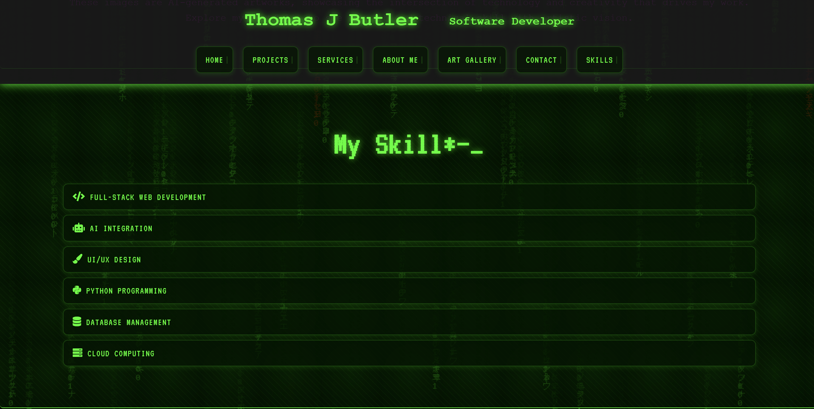
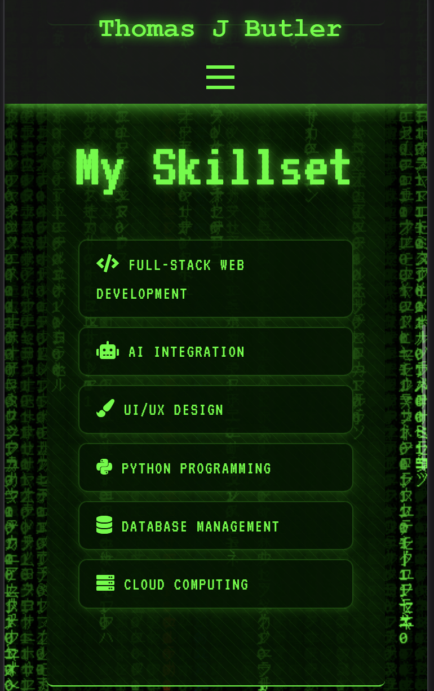
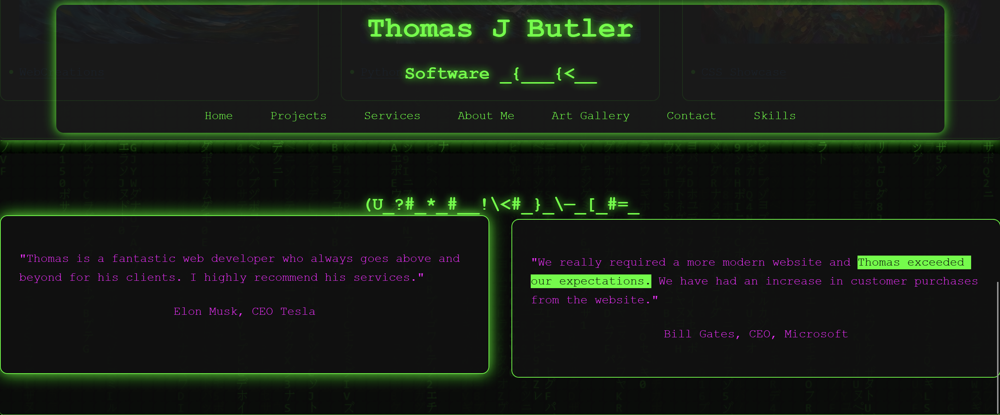
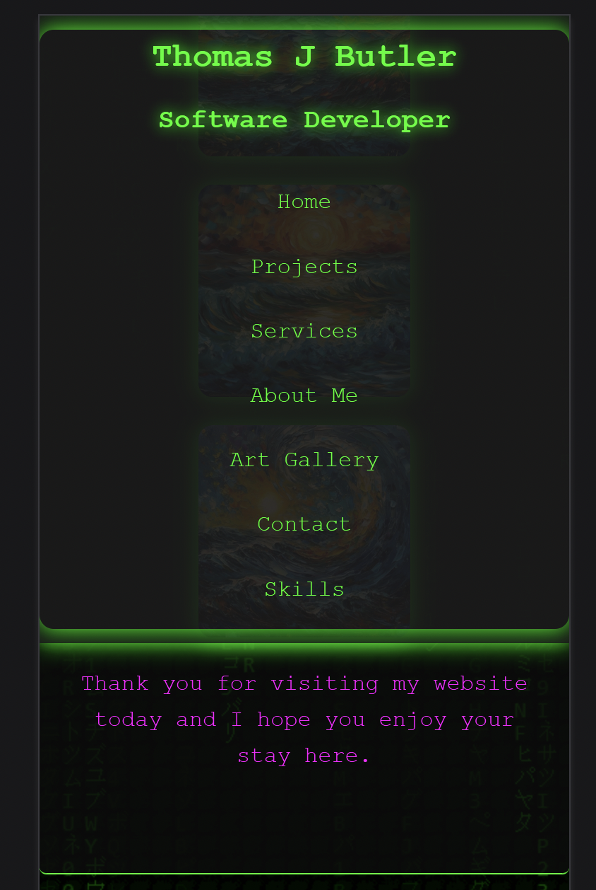
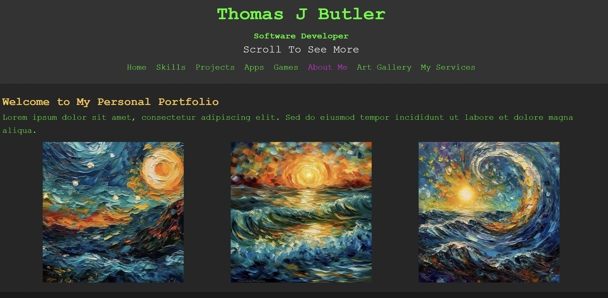
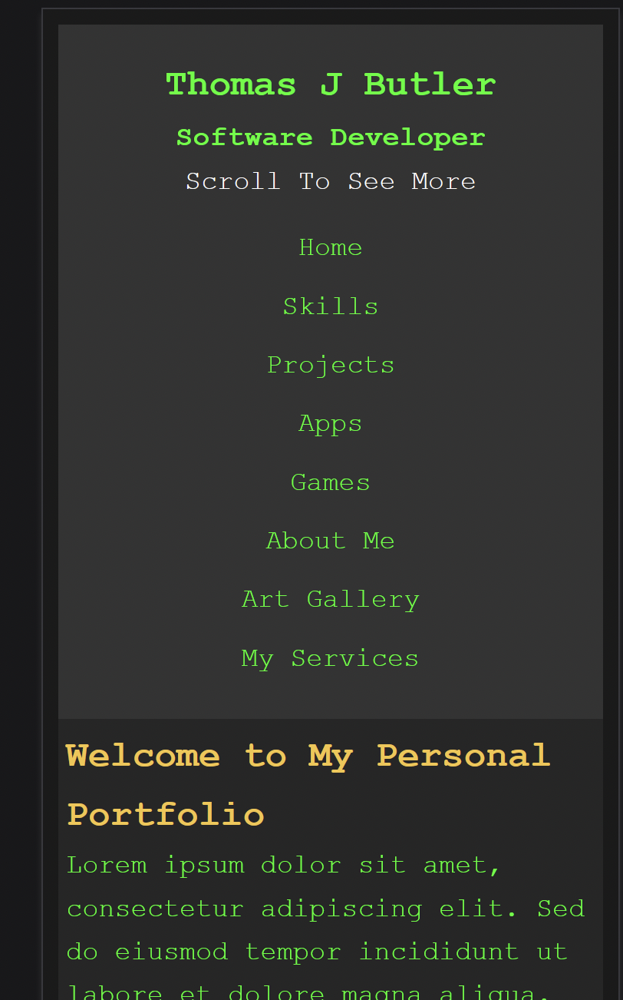

Portfolio Website Evolution - Current (V2.6.6) - Late October 2024
Witness the transformation of my digital presence through each iteration.
Version 2.5
October 2024
Time Travel
Desktop View

Mobile View

Key Changes
- Enhanced Matrix animation effects
- Added Vincent van Gogh-inspired infinity gallery
- Improved mobile responsiveness
- Integrated GSAP animations
- Added ScrollMagic effects
- Added Time Travel Version History feature
- Enhanced Performance Optimization
- Implemented Custom Error Pages
Version 2.0
July 2024
Time Travel
Desktop View

Mobile View

Key Changes
- Introduced Matrix theme
- Added dynamic canvas background
- Implemented responsive grid layout
- Created skill progress visualization
- Added project showcase section
- Added Dark Mode Toggle functionality
- Enhanced SEO Optimization
- Implemented Lazy Loading for images
Version 1.0
January 2024
Time Travel
Desktop View

Mobile View

Key Changes
- Initial website launch
- Basic responsive design
- Simple navigation structure
- Project portfolio section
- Contact form implementation
- Added Social Media Integration
- Implemented Basic SEO
- Created Custom 404 Page